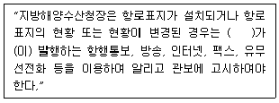
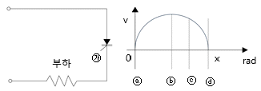
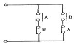
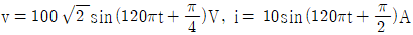
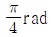
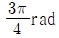
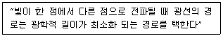
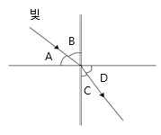

항로표지기사 (2016-08-21 기출문제)
1과목: 항로표지일반
1. 「항로표지법 시행령」상 항로표지 이용료의 전부 또는 일부를 면제할 수 있는 선박으로 거리가 먼 것은?
- 우리나라 탐사선
- 국내 항 간을 운항하는 내항선박
- 대한민국과 상호주의 원칙이 적용되는 외국의 실습선
- 부산항에서 납부하고 출항하여 인천항에 입항하는 외항 선박
(정답률: 83%)

2. 선박에서 항만의 소재를 표시하여 선박의 위치를 확정시키는데 필요한 항로표지는?
- 연안표지
- 유도표지
- 항양표지
- 항만인지표지
(정답률: 69%)
3. 연달아 일어나는 2회의 고조 또는 2회의 저조가 같은 날이라도 반드시 그 높이가 같지 않은 것은?
- 조자
- 대조승
- 대조차
- 일조부등
(정답률: 89%)
4. 여수항으로 입항 중인 선박이 항 입구에서 상부황색, 하부 흑색으로 도색된 등표를 발견하였다. 이 등표는 무슨 방위표지인가?
- 동방위표지
- 서방위표지
- 남방위표지
- 북방위표지
(정답률: 82%)
5. 우리나라 해도의 기준면에 대한 설명으로 맞는 것은?
- 수심의 기준면은 기본수준면이다.
- 간출암의 높이는 평균해면을 기준으로 산출한다.
- 등대의 높이는 약최저저조면을 기준으로 한다.
- 해안선은 평균해면에서 수륙의 경계선으로 표시한다.
(정답률: 71%)
6. 교차방위법을 실시할 때 목표선정에 관한 주의사항으로 틀린 것은?
- 먼 목표보다 가까운 것을 산정 할 것.
- 세 목표가 같은 원 둘레 위에 있을 것
- 위치가 정확하고 뚜렷한 목표를 선정할 것
- 위치선이 교각이 90도에 가까운 것을 선정할 것
(정답률: 75%)
7. 통항이 곤란한 좁은 수로, 만 입구, 항구 등에서 선박을 안전한 항로로 유도하기 위하여 항로의 연장선상의 육지에 설치된 높이의 차가 있는 항로표지는?
- 도등
- 교량등
- 조사등
- 지향등
(정답률: 87%)
8. 부산항 부근을 항해하는 선박이 자차 4.5°E에서 진침로 150°로 항해하고자할 경우에 취해야 할 자선의 마그네틱 컴퍼스침로(CC)는? (단, 편차는 6°W임)
- CC 145.5°
- CC 148.5°
- CC 151.5°
- CC 154.5°
(정답률: 57%)
9. 「항로표지법」상 특수신호표지에 해당하지 않는 것은?
- 레이더표지
- 조류신호표지
- 해양기상신호표지
- 자동위치식별신호표지
(정답률: 80%)
10. 해도의 도법에서 투영조건의 정확성에 따른 분류에 해당하지 않는 것은?
- 등거도법
- 방위도법
- 정거도법
- 정적도법
(정답률: 54%)
11. IALA 해상부표식(B지역) 중 안전수역표지의 도색으로 가장 적합한 것은?
- 홍색
- 홍백종선
- 녹색바탕에 하나의 넓은 홍색횡대
- 홍색바탕에 하나의 넓은 녹색횡대
(정답률: 93%)
12. 해상부표식 B지역에서 사용되는 측방표지 도색이 바르게 짝지어진 것은?
- 좌현표지 : 녹색, 우현표지 : 홍색
- 좌현표지 : 녹색, 우현표지 : 흑색
- 좌현표지 : 홍색, 우현표지 : 녹색
- 좌현표지 : 흑색, 우현표지 : 홍색
(정답률: 92%)
13. 다음 ( )안에 들어갈 내용으로 맞는 것은? (단, 「항로표지법시행규칙」에 따른다.)

- 국립해양조사원
- 지방해양수산청
- 항로표지기술협회
- 한국해양수산연구원
(정답률: 77%)
14. 전파의 여러 가지 성질을 응용하여 항해지표로 사용하는 전파표지가 아닌 것은?
- 로란
- 레이더비콘
- 기상신호표지
- 위성항법보정시스템(DGNSS)
(정답률: 50%)
15. 내해 또는 시계 불량한 지역에서 항로상 좌∙우현측 한계선을 따라 설치하여야 할 부표간의 평균거리로 적합한 것은?
- 0.5마일 정도
- 1~2마일 정도
- 2~3마일 정도
- 3마일 이상
(정답률: 74%)
16. 해안선에서 20마일 이상의 해양을 항해하는 선박에게 선위를 확정함에 이용할 수 있도록 설치하는 항로표지는?
- 연안표지
- 유도표지
- 항양표지
- 육지초인표지
(정답률: 67%)
17. 다음 중 항로표지의 기본요건으로 적합하지 않은 것은?
- 신뢰성이 높고 항상 이용이 쉬울 것
- 이용자에게 친근감을 갖도록 평범할 것
- 일정한 장소에서 항상 고정되어 있어야 하며 정확히 운영 될 것
- 평상시에 항해자가 무시할 수 있고 필요에 따라 즉시 이용할 수 있을 것
(정답률: 63%)
18. 규정된 등질의 부호와 전구의 직류 전압을 제어하고 동작중인 전구의 고장상태를 감시하여 전구교환기에 제어신호를 보내고 일광제어기의 제어신호를 받아 전구를 점등 시키는 장치는?
- 섬광기
- 태양전지
- 전압조정기
- 충전조절기
(정답률: 94%)
19. 방위표지에 대한 설명으로 가장 적합한 것은?
- 통항 항로의 좌현측과 우현측을 표시한다.
- 나침의와 관련하여 항해자에게 가항수역을 표시한다.
- 수로중앙표지와 같이 전 주변이 가항수역임을 표시한다.
- 전 주변이 가항수역인 일정규모의 조립장해를 표시한다.
(정답률: 74%)
20. IALA해상부표식의 내용에 대한 설명으로 틀린 것은?
- 특수표지는 항행원조를 주목적으로 하며, 공사구역 등 특별한 구역을 표시한다.
- 보조표지는 통상 항로 밖에 설치하며 항행안전에 관련된 정보를 제공하는 표지
- 고립장해표지는 그 전 주위가 가항수역인 암초, 침선 등 고립된 장해물 상에 설치 및 계류하는 표지이다.
- 안전수역표지는 그 전 주위가 가항수역임을 표시하는 것으로 중앙선표지 및 수로중앙표지가 있다.
(정답률: 70%)
2과목: 전기·전자기초
21. 직류발전기의 병렬운전 조건이 아닌 것은?
- 극성이 일치할 것
- 주파수가 같을 것
- 전압의 크기가 같을 것
- 외부 특성이 수하특성일 것
(정답률: 59%)
22. 그림은 SCR을 이용하여 부하의 전력을 제어아힉 위한 회로이다. 부하에 최대한 많은 전력을 공급하면 ㉮부분에 가해주는 점호각은?

- ⓐ
- ⓑ
- ⓒ
- ⓓ
(정답률: 70%)
23. 저항만 있는 교류회로에서 전압과 전류의 위상은?
- 동상이다.
- 전류가 앞선다.
- 전압이 앞선다.
- 수시로 변한다.
(정답률: 80%)
24. 제1종 접지공사의 접지 저항은 몇 Ω이하로 유지하여야 하는가?
- 10
- 25
- 30
- 100
(정답률: 72%)
25. 직류발전기 중 독립된 직류전원에서 계자권선에 전류를 흘려 여자하는 발전기는?
- 타여자발전기
- 직권발전기
- 분권발전기
- 복권발전기
(정답률: 87%)
26. 납축전지의 전해액으로 적합한 것은?
- 진한황산
- 묽은 황산
- 묽은 염산
- 수은화칼륨
(정답률: 86%)
27. 다음 그림은 어떤 회로를 설명하고 있는가?

- AND
- OR
- Exclusive OR
- NAND
(정답률: 84%)
28.

이면 전류의 위상은 전압보다 어떻게 되는가?? 만큼 뒤진다.
만큼 뒤진다.
만큼 앞선다. 만큼 뒤진다.
만큼 뒤진다.
만큼 앞선다.
(정답률: 62%)
29. 정현파 교류에 대한 내용이다. 틀린 것은?
- 실효값 = 최대값/√2
- 최대값 = 실효값/√2
- 평균값 = 최대값 × (2/π)
- 최대값 = 실효값 × √2
(정답률: 75%)
30. 정류기와 축전지를 부하에 병렬로 접속하여 축전지의 방전을 계속 보충하면서 부하에 전력을 공급하는 충전방식은?
- 보통충전
- 과부하 충전
- 세류충전
- 부동충전
(정답률: 90%)
31. 선풍기, 세탁기, 냉장고 등에 주로 사용되는 전동기는?
- 직류직권전동기
- 동기전동기
- 단상유도전동기
- 3상유도전동기
(정답률: 62%)
32. 정류회로에서 리플전압(Rippke volrage)란?
- 정류된 전압의 직류분
- 정류된 전압의 교류분
- 무부하 전압
- 전부하 전압
(정답률: 67%)
33. 전류의 발열작용을 이용한 것이 아닌 것은?
- 백열전구
- 전열기
- 전기다리미
- 선풍기
(정답률: 94%)
34. 콘덴서 Q(C)의 전기량을 주었더니 V(V)의 전위차가 생겼다. 이 때 콘덴서의 정전용량 C(F)는?
- C=VQ
- C=VQ2
- C=Q/V
- C=V/Q
(정답률: 60%)
35. 유도발전기의 장점이 아닌 것은?
- 동기발전기에 비해 가격이 싸다.
- 기동과 취급이 간단하며 고장이 적다.
- 난조 등의 이상 현상이 생기지 않는다.
- 역율과 효율이 높다.
(정답률: 64%)
36. 직류를 교류로 변환하는 장치는?
- 인버터
- 컨버터
- 정류기
- 순변환기
(정답률: 84%)
37. 태양전지를 구성하는 반도체와 가장 유사한 형태를 하고 있는 소자는?
- 다이오드
- 트랜지스터
- SCR
- FET
(정답률: 70%)
38. 무한정 직손도체에 10A의 전류가 흐르고 있을 때 도선으로부터 직각방향으로 50cm 떨어진 저머에서의 자계의 세기(AT/m)는?
- 6.36
- 3.18
- 2.12
- 1.09
(정답률: 42%)
39. 실효값이 100V인 교류전압을 브리지 다이오드를 통해 전파정류한 경우 평균값은 약 몇 V인가?
- 141
- 120
- 112
- 90
(정답률: 62%)
40. 선간전압 200V, 역률 60%인 평형 3상 부하에서 소비전력이 10kW일 때 부하전류는 약 몇 A인가?
- 33.1
- 43.1
- 48.1
- 56.6
(정답률: 57%)
3과목: 광파·음파표지
41. 1mW를 기준으로 하는 데시벨은?
- dBW
- dBu
- dBm
- dBV
(정답률: 72%)
42. 다음 원리를 설명한 사람은?

- 페르마
- 스넬
- 하긴스
- 호이겐스
(정답률: 89%)
43. 진공 속에서 파장이 λ, 주파수 v인 빛의 굴절률 n인 물질 속으로 진행하였다. 물질 속에서의 빛의 속도는? (단, 진공 속에서의 빛의 속도는 C이다.)
- C/n
- nλ
- nv
- vλ
(정답률: 77%)
44. 도선의 설정목적으로 거리가 먼 것은?
- 가항 수로 직선 부분의 중심선 표시
- 수로의 가장 깊은 곳의 흘수심 표시
- 양방향 통항로의 분기점 표시
- 암초, 노출암 등의 위치를 표시
(정답률: 46%)
45. 광학적 광달거리에 관여하는 요소로 거리가 먼 것은?
- 대기의 혼탁 정도
- 대기의 굴절
- 표지등화의 광도
- 표지의 배경 조건
(정답률: 58%)
46. 빛의 경로가 그림과 같을 때 기호와 명칭을 맞게 연결한 것은?

- A : 경계각
- B : 입사각
- C : 굴절각
- D : 입체각
(정답률: 75%)
47. 항만, 유도 및 장해표지로 이용되는 것으로 항로, 위험한 암초, 항행금지 지점 등을 표시하는데 목적이 있는 표지는?
- 등대
- 조사등
- 등표
- 도등
(정답률: 42%)
48. 2개의 진동체(말굽쇠 등)의 고유 진동수가 같을 때 한 쪽을 울리면 다른 쪽이 울리는 현상은?
- 감쇠
- 도플러
- 잔향
- 공명
(정답률: 79%)
49. IALA에서 권고한 등질 중 “일정한 광도를 유지하고 암간이 없다.”로 정의된 등질은?
- 부동광
- 급섬광
- 등명암광
- 군섬광
(정답률: 72%)
50. 사람의 눈이 느끼는 빛의 세기인 광원의 광출력을 나타내는 단위는?
- J
- lm
- dB
- nm
(정답률: 91%)
51. 광원의 점멸에 의한 섬광의 섬광시간은 최대치에 대하여 몇 %의 광도를 갖는 시간의 길이를 취하는가?
- 30%
- 50%
- 70%
- 90%
(정답률: 47%)
52. 관측자가 번개를 보고 나서 5초 후에 천둥소리를 들었다면, 변개가 발생한 곳에서 관측자까지의 거리[m]는?
- 1700
- 2000
- 2300
- 2500
(정답률: 65%)
53. 자유음장에서 점 음원으로부터 1m가 되는 지점에서 음압레벨이 84dB이면, 음원으로부터 4m 떨어진 지점에서의 음압레벨은 약 몇 dB인가?
- 52
- 72
- 102
- 122
(정답률: 50%)
54. IALA에서 권고한 등질의 약기가 옳지 않은 것은?
- Q – 호광
- FI - 섬광
- Oc – 명암광
- F - 부동광
(정답률: 67%)
55. 법정(권고) 항로상 등부표의 설치기준에 대한 설명으로 거리가 먼 것은?
- 법선 항로를 명확히 확보하기 위하여 항로 양측에 설치한다.
- 변침점에 설치한다.
- 설치 간격은 육안으로 볼 수 있는 정도로서 1해리 이내이다.
- 위험한 장해물 위치에 설치한다.
(정답률: 50%)
56. 교량등의 종류와 등색의 연결이 틀린 것은?
- 좌측단등 - 녹색
- 우측단등 – 홍색
- 중앙등 – 백색
- 경간등 – 청색
(정답률: 93%)
57. 지역적 여건상 도등 설치가 곤란한 협수로의 연장선상에 설치하여 안전항로를 표시하는 항로표지는?
- 도등
- 조사등
- 지향등
- 조명등
(정답률: 74%)
58. 항로표지의 야간표지 중 등대부근에 위험물이 없고 풍랑이나 조류 때문에 등부표를 설치하기 어려운 경우, 등대에 강력한 투광기를 설치하여 위험구역을 비추기 위한 등화는?
- 등선
- 도등
- 조사등
- 임시등
(정답률: 59%)
59. 등부표의 안전계산에서 '물 속에 잠긴 체적의 중심'을 무엇이라 하는가?
- 부심
- 경심
- 흘수
- 모멘트
(정답률: 87%)
60. 우리나라에서 적용하고 있는 섬광의 실효광도와 관계없는 파라메타는?
- 광도의 시간 미분량
- 부동광도
- 전 섬광시간
- 시각의 시정수
(정답률: 54%)
4과목: 전파표지 및 시스템이용
61. VHF 통신에서 연안국 송신안테나 높이 50m, 선박 수신안테나 높이 10m일 때 통신이 가능한 거리는 약 몇 해리인가?
- 22
- 26
- 28
- 31
(정답률: 72%)
62. 마이크로파가 Radar에 사용되는 이유로 거리가 가장 먼 것은?
- 작은 물체로부터 에코가 강하다.
- 회절 등의 현상이 적고 직진성이 좋다.
- 비 또는 눈에 의한 감쇠가 적다.
- 지향성이 예민한 안테나를 손쉽게 이용할 수 있다.
(정답률: 65%)
63. LORAN-C 전파경로에 따른 각 지점의 감쇠량을 결정 짓는 주요 요소가 아닌 것은?
- 도전율
- 유전율
- 수정 굴절율
- 지구의 곡률
(정답률: 54%)
64. 전리층의 제2종 감쇠에 대한 설명으로 거리가 먼 것은?
- 전리층에서 반사할 때 받는 감쇠이다.
- 감쇠량은 전자밀도에 반비례한다.
- 감쇠량은 수직으로 입사할수록 작아진다.
- 감쇠량은 주파수가 높을수록 커진다.
(정답률: 43%)
65. 장∙중파대에서 사용되는 안테나의 종류가 아닌 것은?
- 역 L형 안테나
- λ/2 다이폴(Dipole) 안테나
- 에드콕(Adcock) 안테나
- 베리시 토시(Bellini-Tosi)
(정답률: 72%)
66. 반파장 다이폴 안테나에 대한 설명으로 적합하지 않은 것은?
- 실효고는 약 0.131λ 이다.
- 복사저항은 약 73.1[Ω]
- 절대이득은 약 1.64이다.
- 수평 다이폴에서 수평면 내 지향서은 8자형이다.
(정답률: 69%)
67. 지표파에서 가장 손실이 적어 원거리까지 도달할 수 있는 것은?
- 수직편파를 사용하여 해상을 전파할 때
- 수평편파를 사용하여 해상을 전파할 때
- 수직편파를 사용하여 평파를 전파할 때
- 수평편파를 사용하여 평파를 전파할 때
(정답률: 73%)
68. 시간적으로 변화하고 있는 전계는 자계를 발생하고, 또 변화하고 있는 자계는 전계를 발생시킨다는 사실을 정립한 식은?
- Lentz 방정식
- Maxwall 방정식
- Fourier 방정식
- Laplace 방정식
(정답률: 82%)
69. VTS 레이더에서 근거리에 큰 물체가 있고 그에 의한 반사파의 에너지도 크게 되어 수신기가 포화되어 의사적으로 감도가 저하되는 현상은?
- 공진현상
- 위상지연 현상
- 블랙아웃 현상
- 정현파 현상
(정답률: 85%)
70. 오차를 원인과 성질에 따라 분류할 때 시스템 오차에 포함되지 않는 것은?
- 이론오차
- 기기오차
- 과실오차
- 개인오차
(정답률: 65%)
71. 진행파에 대한 설명으로 거리가 먼 것은?
- 발생원인은 선로의 특성 임피던스와 부하가 정합되었을 때이다.
- 전압 전류의 분포는 λ/2 거리마다 최대와 최소가 있다.
- 전류 전압의 위상은 선로의 각 점에 따라서 위상이 다르다.
- 지향성은 공중선으로 사용하였을 경우 단향성이다.
(정답률: 54%)
72. LORAN-C 시스템을 구성하는 주국의 기능으로서 거리가 먼 것은?
- 종국신호를 감시한다.
- 통제국의 지시에 의하여 블링크한다.
- 운용상의 지시가 요구하는 겨우 주국과 종국의 시간차를 감시한다.
- 당해 체인의 기준시간, 신호반복율 및 반송주파수를 설정한다.
(정답률: 69%)
73. 안테나의 손실저항으로 거리가 먼 것은?
- 접지저항
- 파동저항
- 로딩코일저항
- 도체저항
(정답률: 40%)
74. GPS 반송파의 위상 추적 회로에서 반송파 위상값을 순간적으로 놓침으로써 발생하는 오차는?
- 전리층
- 다중경로
- 사이클슬립
- 위성궤도
(정답률: 75%)
75. 대류권파 페이딩 중 비, 구름, 안개 등에 의한 흡수 또는 산란에 의해 발생하는 것은?
- 덕트형 페이딩
- 신틸레이션 페이딩
- 감쇠형 페이딩
- X형 페이딩
(정답률: 79%)
76. 레이더 반사기(RADAR Reflector)의 성능을 결정짓는 주요 요소가 아닌 것은?
- 레이더반사기의 형
- 레이더반사기의 크기
- 레이더반사기 출력
- 레이더반사기의 수면 상의 높이
(정답률: 50%)
77. 다음 중 로란-C에서 가장 짧은 반복주기(GRI)를 결정짓는데 고려할 사항으로 거리가 먼 것은?
- 펄스간격
- 코딩딜레이
- 수신기 회복시간
- 위상코드
(정답률: 30%)
78. LORAN-C 체인의 기본적 구성 형태로 거리가 먼 것은?
- Star 형
- Ultra 형
- Triad형
- Y형
(정답률: 82%)
79. LORAN-C 통제방법 중 브라보(Bravo) 통제에 대한 설명으로 맞는 것은?
- 통제소에서 RCI 또는 RCU를 이용하여 LP Start와 Stop Blink명력을 원격으로 입력함으로서 종국을 통제한다.
- 주국의 LORAN-C 감시용 수신기로부터의 정보를 이용한 기선통제이다.
- 기선상에 있지 않는 LORAN-C 감시용 수신기로부터의 정보를 이용한 기선통제이다.
- 기선상에 있는 종국의 LORAN-C 감시용 수신기로부터 정보를 이용한 기선통제이다.
(정답률: 60%)
80. LORAN-C 수신기에서 측정하는 주국과 종국의 신호 도달시간차(TD)는? (단, 기선장 = 21000μs, 할당된 코딩 딜레이 = 11000μs, 종국에서 수신기까지의 전기적 거리= 8000μs, 주국에서 수신기까지의 전기적 거리 = 7000μs)
- 44000 μs
- 33000 μs
- 22000 μs
- 11000 μs
(정답률: 79%)